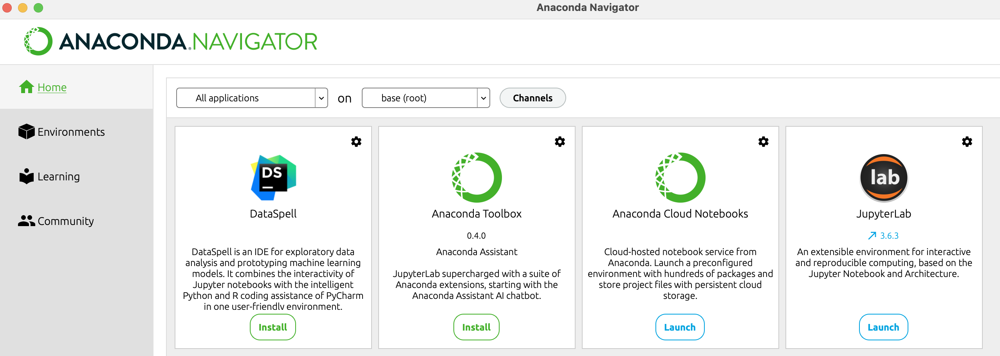

How to Use Jupyter Notebooks#
A Jupyter notebook is a document that can combine live programming code, text, images, and pretty displays of data all in the same place. This combination makes Jupyter notebooks clutch for exploring data as well as for learning and teaching.
A Jupyter notebook has a special .ipynb file extension and can only be opened if you have the application JupyterLab or Jupyter Notebook installed and running. One of the cool things about Jupyter Book, which powers this online textbook, is that you can open a Jupyter notebook on the internet without any prior installation or configuration — using services like Binder.
Some of Jupyter’s Nice Features#
This document is a Jupyter notebook! Let’s quickly demonstrate some of the features that make Jupyter notebooks useful.
Display Data#
We can display and explore data in a readable and aesthetically-pleasing way.
For example, here’s a snippet of a CSV file with some data about films and character dialogue, compiled by The Pudding. We’ll be working with this data in a later lesson.
import pandas as pd
movie_data = pd.read_csv('../data/Pudding/Pudding-Film-Dialogue-Clean.csv')
movie_data.tail(5)
| script_id | character | words | gender | age | title | release_year | gross | proportion_of_dialogue | after_2000 | |
|---|---|---|---|---|---|---|---|---|---|---|
| 23043 | 9254 | Lumiere | 1063 | Man | 56.0 | Beauty and the Beast | 1991-01-01 | 452.0 | 0.104636 | False |
| 23044 | 9254 | Maurice | 1107 | Man | 71.0 | Beauty and the Beast | 1991-01-01 | 452.0 | 0.108967 | False |
| 23045 | 9254 | Monsieur D'Arqu | 114 | Man | 58.0 | Beauty and the Beast | 1991-01-01 | 452.0 | 0.011222 | False |
| 23046 | 9254 | Mrs. Potts | 564 | Woman | 66.0 | Beauty and the Beast | 1991-01-01 | 452.0 | 0.055517 | False |
| 23047 | 9254 | Wardrobe | 121 | Woman | 54.0 | Beauty and the Beast | 1991-01-01 | 452.0 | 0.011911 | False |
Make Data Visualizations#
We can create visualizations based on the above data in the very same document.
Here’s a plot of The Pudding films by year of their release.
movie_data.groupby('release_year')['title'].count().plot(title='Films By Year')
<matplotlib.axes._subplots.AxesSubplot at 0x1191aed50>
Combine Code, Text, Images, and Links#
We can combine code, text, images, and links.
For example, here’s some data about Beauty and the Beast.
movie_data[movie_data['title'] =='Beauty and the Beast']
| script_id | character | words | gender | age | title | release_year | gross | proportion_of_dialogue | after_2000 | |
|---|---|---|---|---|---|---|---|---|---|---|
| 23037 | 9254 | Beast | 1162 | Man | 35.0 | Beauty and the Beast | 1991-01-01 | 452.0 | 0.114381 | False |
| 23038 | 9254 | Belle | 2183 | Woman | 35.0 | Beauty and the Beast | 1991-01-01 | 452.0 | 0.214883 | False |
| 23039 | 9254 | Chip | 446 | Man | 9.0 | Beauty and the Beast | 1991-01-01 | 452.0 | 0.043902 | False |
| 23040 | 9254 | Cogsworth | 1658 | Man | 49.0 | Beauty and the Beast | 1991-01-01 | 452.0 | 0.163205 | False |
| 23041 | 9254 | Gaston | 1326 | Man | 38.0 | Beauty and the Beast | 1991-01-01 | 452.0 | 0.130525 | False |
| 23042 | 9254 | Lefou | 415 | Man | NaN | Beauty and the Beast | 1991-01-01 | 452.0 | 0.040850 | False |
| 23043 | 9254 | Lumiere | 1063 | Man | 56.0 | Beauty and the Beast | 1991-01-01 | 452.0 | 0.104636 | False |
| 23044 | 9254 | Maurice | 1107 | Man | 71.0 | Beauty and the Beast | 1991-01-01 | 452.0 | 0.108967 | False |
| 23045 | 9254 | Monsieur D'Arqu | 114 | Man | 58.0 | Beauty and the Beast | 1991-01-01 | 452.0 | 0.011222 | False |
| 23046 | 9254 | Mrs. Potts | 564 | Woman | 66.0 | Beauty and the Beast | 1991-01-01 | 452.0 | 0.055517 | False |
| 23047 | 9254 | Wardrobe | 121 | Woman | 54.0 | Beauty and the Beast | 1991-01-01 | 452.0 | 0.011911 | False |
Now here’s an image of Beauty and the Beast characters.

See the section Code vs Markdown Cells below for more information about how to include text, images, and links in a Jupyter notebook.
How to Launch JupyterLab#
To open a Jupyter notebook file (.ipynb), you need to have a Jupyter application both installed and running. This is confusing for many beginners. If you have Jupyter installed, it seems like you should just be able to click a Jupyter notebook to open it, but you need to launch the application program Jupyter Notebook or JupyterLab first.
In this class, we’re using JupyterLab as our primary Jupyter application program. JupyterLab and Jupyter Notebook are very similar programs, but JupyterLab is newer and has a bigger and better user interface as well as other improved features.
Anaconda Navigator#
There are two main ways you can launch JupyterLab. First, you can launch JupyterLab from Anaconda Navigator. You can find Anaconda Navigator in your Applications folder or by searching your computer.

Once Anaconda Navigator opens, you can launch JupyterLab by clicking “Launch” under the JupyterLab icon.
{kind=link}
Command Line#
Second, you can launch Jupyter lab from the command line. PATH.
jupyter lab
Attention
JupyterLab will open from whatever location you launch from on the command line
Wait Why is JupyterLab Opening in My Web Browser?#
JupyterLab opens in a web browser. But JupyterLab is not connected to the internet. It is simply running on a local server on your own personal computer.
How to Shut Down JupyterLab#
To shut down JupyterLab, you can go to File -> Shut Down.
You can also shut down JupyterLab from the command line by pressing Control + C.
How to Make a New Jupyter Notebook#
To make a new Jupyter notebook, select the Python 3 icon under “Notebook.”

How to Create and Run a Cell#
You can create a new cell by clicking the plus
+sign in the toolbar or by pressingOption+Return(Mac) /AltReturn(Windows)
You can run the cell by clicking the play button ▶️ on the toolbar above or by typing
Shift+Return.
Show code cell source
from IPython.display import IFrame
IFrame("../videos/create-and-run-cell.mp4", width='100%', height='400px')
Code vs Markdown Cells#
Jupyter notebooks are made up of cells, which can either contain code or Markdown text. Markdown is a simple “language” that allows you to include formatting instructions directly in the text — bold, italics, headers, links, imgages, code, and more. Markdown is used all over the internet, including on Reddit and on GitHub.
Markdown Syntax |
Markdown Results |
|---|---|
To make text *italics*
|
To make text italics |
To make text **bold***
|
To make text bold |
To make text a [link](https://melaniewalsh.org/)
|
To make text a link |
To make text `code`
|
To make text |
You can change the cell from “Code” to “Markdown” by clicking the drop down in the toolbar.
For more on what you can do with Markdown, see Adam Pritchard’s Markdown Cheatsheet.
How to Save Your Notebook#
If you want to save your notebook, press Command ⌘ + S (Mac) / Windows Key + S (Windows).